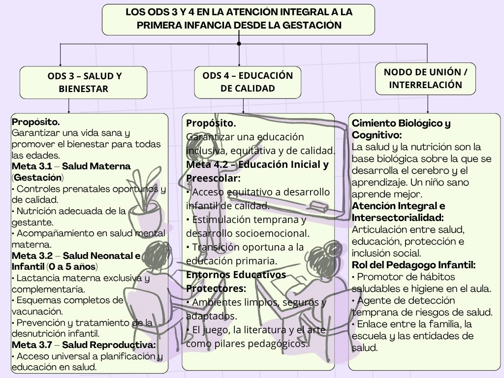
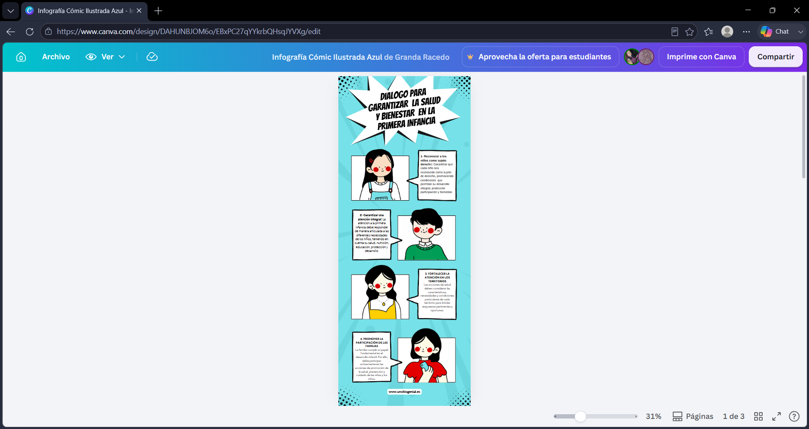
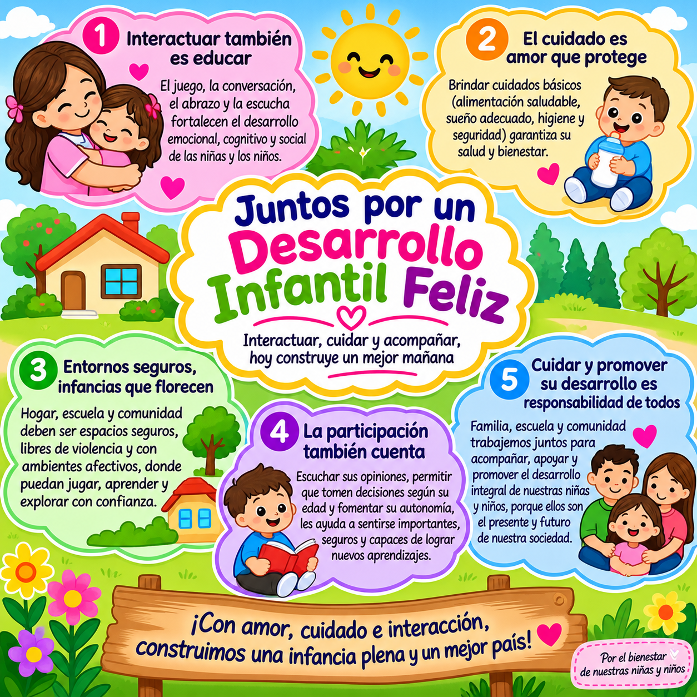
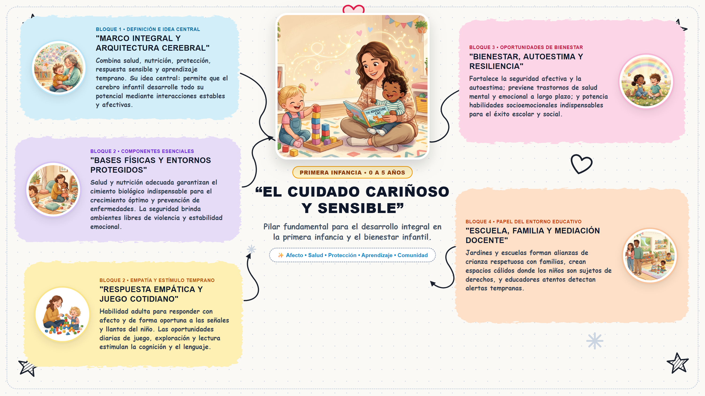
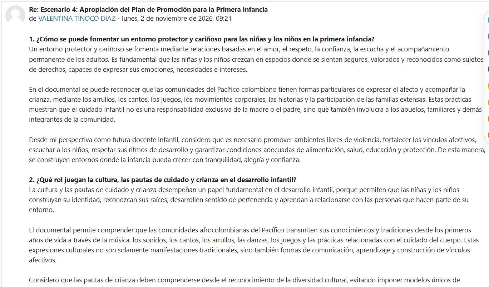

Garantizando el Derecho a la Salud en la Primera Infancia
Repositorio académico que reúne de manera rigurosa las actividades individuales y colaborativas realizadas por el grupo de investigadoras en cada uno de los Escenarios del curso: mapas conceptuales, análisis de referentes, decálogos, matrices contextuales, escritos de profundización y planes de promoción en salud.
Ficha Secuencia Didáctica Progreso: 80% (4/5)
Estructura del Repositorio por Escenarios
ODS y Salud Infantil
- Mapa Conceptual (ODS 3 y 4)
- Preguntas Orientadoras por Estudiante
Atención en Salud
- Decálogos por Estudiante
- Matriz de Análisis de Entornos
- Plan de Promoción (0 a 1 mes)
Salud como Derecho
- Piezas Comunicativas de Ciclos
- Escritos Teóricos (5 Temas)
- Diagnósticos Situacionales
- Plan de Promoción (Intencionalidades)
Plan de Promoción
- Infografías Cuidado Cariñoso
- Preguntas Reflexivas Documental
- Plan de Promoción (3 a 6 años)
Identificación de los Objetivos de Desarrollo Sostenible en relación con la salud infantil
Repositorio de actividades: Mapa conceptual colaborativo sobre ODS 3 y 4 y análisis de referentes teóricos mediante preguntas orientadoras sustentadas por estudiante.

Articulación ODS 3 y ODS 4
Organizador conceptual elaborado por el colectivo que interconecta las metas de salud neonatal e infantil, nutrición y estimulación temprana como condiciones indispensables para garantizar el aprendizaje y la educación inicial de calidad.
1. La Salud como Derecho Impostergable
¿Por qué es importante que la salud sea asumida como un derecho impostergable en la primera
infancia?
Porque constituye la base biológica, neurológica y emocional indispensable para la supervivencia y el
desarrollo integral. Las privaciones en salud o nutrición durante los primeros años generan daños
permanentes e irreversibles en las capacidades cognitivas y afectivas del ser humano.
2. ¿Cómo influyen los entornos (hogar, educativo, comunitario) en la garantía de la
salud?
Los entornos configuran la cotidianidad vital: un hogar seguro brinda afecto y saneamiento; la institución
educativa promueve hábitos higiénicos y socialización protegida; y la comunidad garantiza espacios libres
de violencias y acceso a servicios públicos.

3. Rol Pedagógico y Actores Intersectoriales
¿Cómo desde nuestro rol de pedagogos infantiles podemos favorecer el derecho a la
salud?
Como observadores privilegiados del neurodesarrollo en el aula, los pedagogos detectamos alertas tempranas
de desnutrición o malestar emocional, diseñamos experiencias lúdicas de autocuidado e higiene bucal, y
articulamos activamente a las familias con las redes de salud locales.
4. ¿Qué actores institucionales e intersectoriales facilitan la atención integral?
Articulación sinérgica entre el Ministerio de Salud, ICBF, Secretarías de Educación, EPS/IPS, comités de
infancia y líderes comunitarios mediante la Política de Estado "De Cero a Siempre" (Ley 1804).

Aportes al Debate y Síntesis Normativa de Referentes
Consolidación de aportes teóricos orientados a articular la garantía del derecho a la salud con los compromisos internacionales de la Convención sobre los Derechos del Niño y los ODS en Colombia, resaltando la corresponsabilidad ineludible de la escuela en la vigilancia de la salud integral.
Exploración contextual de la atención en salud en los territorios
Repositorio de actividades: Decálogo individual por estudiante, Matriz de análisis en los cuatro entornos del desarrollo infantil y Plan de promoción para el recién nacido (0 a 1 mes).

Decálogo Ilustrado: Salud Infantil
Cómic pedagógico en 3 páginas sobre lactancia materna, prevención de riesgos y afecto en el hogar.

Decálogo: Compromiso Territorial
Pautas de dignidad infantil, respeto a la diversidad cultural y acceso equitativo a servicios médicos de calidad.

Infografía: Cuidado Sensible y Entornos
Ruta secuencial que articula seguridad alimentaria, bienestar lúdico, enfoque diferencial y entornos afectivos.

Decálogo: Garantía y Ley 1804
Diez principios basados en la Política de Estado para el Desarrollo Integral de la Primera Infancia "De Cero a Siempre".
Decálogo Ético: Principios de Promoción de la Salud en la Escuela
Construcción de directrices éticas pedagógicas para maestras infantiles: respeto al ritmo biológico, no discriminación en la atención, vigilancia del bienestar nutricional y articulación con los centros de atención primaria.
Caracterización de la salud infantil en los cuatro entornos del desarrollo y articulación con los 5 momentos de la Ruta Integral de Atenciones (RIA):
¿Cómo se favorece la salud en el Hogar?
Vivienda digna, saneamiento básico, agua segura y alimentación balanceada. Pautas de crianza amorosa basadas en el buen trato y el juego, previniendo cualquier forma de castigo físico o violencia intrafamiliar.
¿Cómo se favorece la salud en el Entorno Salud?
Servicios de salud oportunos, cálidos y universales. Controles periódicos de crecimiento y desarrollo, vacunación completa, tamizajes sensoriales y consejería profesional en lactancia y nutrición.
¿Cómo se favorece la salud en el Entorno Educativo?
Ambientes pedagógicos seguros, higiénicos y estimulantes. Prácticas cotidianas de lavado lúdico de manos, meriendas saludables y pedagogías activas que fortalecen el bienestar socioemocional.
¿Cómo se favorece la salud en el Espacio Público?
Parques, senderos y zonas verdes limpios, seguros y accesibles para todos los niños y niñas, promoviendo el juego al aire libre, la actividad física y el encuentro comunitario.
Los 5 Momentos de la Ruta Integral de Atenciones (RIA):
1. Preconcepción & 2. Gestación
Educación preconcepcional, controles prenatales con micronutrientes y preparación para el parto humanizado y lactancia.
3. Recién Nacido (0 a 1 mes)
Tamizaje neonatal auditivo y metabólico, vacunas BCG y Hepatitis B neonatal, lactancia materna exclusiva y apego seguro.
4. 1 a 3 Años & 5. 3 a 6 Años
Valoración de crecimiento y desarrollo, salud visual y oral, hábitos de autocuidado y educación inicial integral.
Primeros pasos, grandes cuidados
Momento Vital: Nacimiento a primer mes (0 a 30 días de vida)
🎯 Justificación y Pertinencia
La etapa neonatal constituye la ventana más sensible para consolidar la supervivencia y el neurodesarrollo. Requiere atención articulada entre familia, salud y escuela.
🚨 Criterios de Urgencia
Cualquier alteración (infecciones, deshidratación, falta de apego o violencia) puede dejar secuelas neurológicas permanentes o provocar mortalidad prevenible.
Estrategias Prioritarias Articuladas:
Fundamentación del enfoque de salud como derecho en los territorios
Repositorio de actividades: Piezas comunicativas de ciclos de vida, Escritos teóricos sobre acompañamiento, Diagnósticos situacionales territoriales y Plan de promoción (Intencionalidades).

Acompañar es Reconocer Cada Historia
Respetar el ritmo madurativo, la identidad cultural y las vivencias familiares de cada niño como sujeto único.

El Amor y el Juego Nutren el Cerebro
Evidencia científica sobre cómo las interacciones cálidas y el juego espontáneo consolidan la arquitectura cerebral.

Ayudar para Crecer
Acompañar sin sobreproteger ni vulnerar: brindar herramientas que fomenten la seguridad emocional y la autoeficacia.

Juntos por un Desarrollo Feliz
La protección integral no es tarea de un solo actor; requiere sinergia institucional y comunitaria continua.

Ruta Secuencial y Dialéctica de los Ciclos de Vida
Mapa mental que ilustra la progresión evolutiva e hitos socioafectivos, motores y cognitivos para la intervención pedagógica oportuna.
Caracterización situacional de indicadores de salud materno-infantil en tres contextos territoriales colombianos (Departamento del Chocó, Bogotá D.C. y Departamento del Cesar):
Severas dificultades de transporte fluvial, dispersión poblacional y déficit de centros de salud equipados en zonas rurales.
Red hospitalaria consolidada; persiste el desafío de oportunidad de citas y atención humanizada para población migrante.
Concentración de servicios en Valledupar y brechas marcadas en corregimientos rurales e indígenas de la Serranía del Perijá.
Propósitos Pedagógicos para el Aula de Educación Inicial
Estructuración de propósitos formativos explícitos que orientan la práctica docente para hacer de la salud un derecho vivenciado cotidianamente:
Favorecer que niñas y niños exploren su cuerpo, nombren sus partes con respeto y disfruten la higiene y el movimiento como fuentes de alegría y bienestar.
Integrar la alimentación nutritiva, el lavado de manos y el descanso activo dentro del arte, la literatura y el juego.
Generar espacios acogedores donde se validen todas las emociones, se resuelvan conflictos mediante el diálogo y se erradique cualquier forma de maltrato.
Construir alianzas activas con padres de familia y centros de salud para el seguimiento continuo de vacunas y nutrición.
Apropiación del Plan de promoción para la primera infancia
Repositorio de actividades: Infografías del marco de Cuidado Cariñoso y Sensible (UNICEF / OMS), Preguntas reflexivas del documental del Pacífico colombiano y Plan de promoción preescolar (3 a 6 años).

Los 5 Componentes del Cuidado Sensible
1. Buena salud • 2. Nutrición adecuada • 3. Atención receptiva • 4. Protección y seguridad • 5. Oportunidades para el aprendizaje temprano.

Potencialidades en el Entorno Educativo
Cómo los educadores infantiles materializan el cuidado sensible organizando ambientes enriquecidos que detonan la curiosidad y la seguridad emocional.

El cuidado cariñoso y sensible
Pilar fundamental para el desarrollo integral en la primera infancia y el bienestar infantil.
“Velo, ¡qué bonito es nacer y crecer en mi Pacífico colombiano!”
Reflexiones pedagógicas sobre las prácticas de crianza tradicionales, saberes ancestrales de parteras y sabedoras, cantos, arrullos y la movilización comunitaria en los territorios del Pacífico colombiano.
"En el Pacífico la crianza es un tejido colectivo: una niña o un niño es cuidado por todo el río y por toda la vereda."
▶️ Reproducir en modalCaptura del Foro de Discusión • Sheril Paola Granda Rasedo
Registro de la intervención académica en el foro colaborativo de la plataforma UNAD.

1. ¿Cómo se puede fomentar un entorno protector y cariñoso para las niñas y los niños en la primera infancia?
Un entorno protector y cariñoso se fomenta brindando a los niños y las niñas espacios donde se sientan amados, seguros, escuchados y respetados. Esto implica atender sus necesidades físicas y emocionales, ofrecerles una alimentación adecuada, acompañarlos en sus procesos de aprendizaje y garantizar que crezcan libres de violencia, maltrato y discriminación. En el documental se evidencia cómo las familias y las comunidades del Pacífico colombiano utilizan los cantos, los arrullos, los sonidos, los movimientos y las expresiones de afecto como parte de la crianza. Estas prácticas permiten comprender que proteger a la infancia no significa solamente evitar los peligros, sino también construir vínculos afectivos que fortalezcan su confianza y bienestar. Desde mi perspectiva, tanto la familia como los educadores deben trabajar conjuntamente para ofrecerles experiencias de cuidado, respeto y acompañamiento desde sus primeros años de vida.
2. ¿Qué rol juegan la cultura, las pautas de cuidado y crianza en el desarrollo infantil?
La cultura y las pautas de crianza tienen un papel fundamental porque influyen en la manera como los niños y las niñas aprenden, se relacionan, construyen su identidad y comprenden el mundo que los rodea. El documental muestra que en las comunidades afrocolombianas del Chocó existen conocimientos y tradiciones que se transmiten de generación en generación mediante la música, los cantos, los movimientos corporales, las creencias y las prácticas de cuidado. Estas expresiones hacen parte de la identidad cultural de los niños y contribuyen a su sentido de pertenencia. Considero que es importante reconocer y valorar estas costumbres, sin desconocer que todas las prácticas de crianza deben garantizar los derechos, la salud y la integridad de la infancia. Por eso, la educación inicial debe respetar la diversidad cultural y evitar imponer una única forma de criar o educar, reconociendo que cada comunidad tiene saberes valiosos que pueden enriquecer el desarrollo infantil.
3. ¿De qué manera las interacciones en los distintos entornos (hogar, educativo, comunidad) influyen en el desarrollo y aprendizaje de las niñas y los niños?
Las interacciones que los niños y las niñas tienen en el hogar, las instituciones educativas y la comunidad influyen directamente en su desarrollo emocional, social, físico y cognitivo. En el hogar reciben sus primeras muestras de amor, protección y acompañamiento; en el entorno educativo fortalecen sus habilidades mediante el juego, la exploración, la comunicación y la convivencia con otras personas; mientras que en la comunidad aprenden a relacionarse con su cultura, sus tradiciones y su entorno social. El documental permite observar cómo los diferentes miembros de la comunidad participan en la crianza y cómo las experiencias culturales, musicales y corporales hacen parte del aprendizaje desde los primeros años. Esto demuestra que la educación de la primera infancia no es responsabilidad exclusiva de los docentes o de las familias, sino que requiere la participación de todos los actores que rodean al niño. Cuando estos entornos trabajan de manera articulada, se generan mejores oportunidades para un desarrollo integral.
4. ¿Cómo puede el entorno educativo apoyar a las familias en la promoción de prácticas de cuidado cariñoso y sensible?
El entorno educativo puede apoyar a las familias mediante espacios de orientación, diálogo y participación donde se compartan conocimientos sobre la importancia del cuidado, la protección, la alimentación, la salud, el juego y el acompañamiento emocional durante la primera infancia. También puede desarrollar talleres, encuentros familiares y actividades pedagógicas que permitan fortalecer los vínculos afectivos entre padres, cuidadores y niños. Considero que los docentes deben reconocer las experiencias y los conocimientos que las familias han adquirido a través de sus propias tradiciones, en lugar de limitarse a transmitir instrucciones sobre cómo deben criar a sus hijos. El documental es un ejemplo de la importancia de valorar los saberes culturales y comunitarios, por lo que las instituciones educativas pueden incorporar canciones, juegos tradicionales, relatos y expresiones culturales en sus actividades. De esta manera, se fortalece la relación entre familia y escuela y se construye un acompañamiento más respetuoso y cercano a las necesidades de cada niño.
5. ¿Qué desafíos enfrentan las comunidades en la implementación de entornos protectores?
Las comunidades enfrentan diferentes desafíos para garantizar entornos protectores durante la primera infancia, entre ellos la falta de recursos económicos, las dificultades de acceso a los servicios de salud y educación, las condiciones de pobreza, la violencia, la desigualdad y la falta de acompañamiento institucional. En algunas comunidades rurales y culturalmente diversas también existen dificultades relacionadas con el acceso a programas de atención integral que reconozcan sus costumbres y necesidades particulares. A partir del documental, considero que otro desafío importante es evitar que los saberes ancestrales y las prácticas culturales de crianza sean desconocidos o desvalorizados, ya que estos representan una parte fundamental de la identidad de las comunidades. Por esta razón, es necesario fortalecer el trabajo conjunto entre las familias, las instituciones educativas, los servicios de salud y las organizaciones comunitarias. Un entorno protector no se construye únicamente con buenas intenciones, sino con oportunidades, recursos, respeto por la diversidad y compromiso de toda la sociedad.
Captura del Foro de Discusión • Valentina Tinoco Díaz
Registro de la intervención académica en el foro colaborativo de la plataforma UNAD.

1. ¿Cómo se puede fomentar un entorno protector y cariñoso para las niñas y los niños en la primera infancia?
Un entorno protector y cariñoso se fomenta mediante relaciones basadas en el amor, el respeto, la confianza, la escucha y el acompañamiento permanente de los adultos. Es fundamental que las niñas y los niños crezcan en espacios donde se sientan seguros, valorados y reconocidos como sujetos de derechos, capaces de expresar sus emociones, necesidades e intereses.
En el documental se puede reconocer que las comunidades del Pacífico colombiano tienen formas particulares de expresar el afecto y acompañar la crianza, mediante los arrullos, los cantos, los juegos, los movimientos corporales, las historias y la participación de las familias extensas. Estas prácticas muestran que el cuidado infantil no es una responsabilidad exclusiva de la madre o el padre, sino que también involucra a los abuelos, familiares y demás integrantes de la comunidad.
Desde mi perspectiva como futura docente infantil, considero que es necesario promover ambientes libres de violencia, fortalecer los vínculos afectivos, escuchar a los niños, respetar sus ritmos de desarrollo y garantizar condiciones adecuadas de alimentación, salud, educación y protección. De esta manera, se construyen entornos donde la infancia pueda crecer con tranquilidad, alegría y confianza.
2. ¿Qué rol juegan la cultura, las pautas de cuidado y crianza en el desarrollo infantil?
La cultura y las pautas de cuidado y crianza desempeñan un papel fundamental en el desarrollo infantil, porque permiten que las niñas y los niños construyan su identidad, reconozcan sus raíces, desarrollen sentido de pertenencia y aprendan a relacionarse con las personas que hacen parte de su entorno.
El documental permite comprender que las comunidades afrocolombianas del Pacífico transmiten sus conocimientos y tradiciones desde los primeros años de vida a través de la música, los sonidos, los cantos, los arrullos, las danzas, los juegos y las prácticas relacionadas con el cuidado del cuerpo. Estas expresiones culturales no son solamente manifestaciones tradicionales, sino también formas de comunicación, aprendizaje y construcción de vínculos afectivos.
Considero que las pautas de crianza deben comprenderse desde el reconocimiento de la diversidad cultural, evitando imponer modelos únicos de educación y cuidado. Cada comunidad tiene saberes y experiencias que enriquecen la formación de la infancia. Sin embargo, es importante que las prácticas culturales se desarrollen respetando siempre la dignidad, la integridad y los derechos de los niños y las niñas.
Por esta razón, como futuras docentes debemos valorar los conocimientos de las familias y las comunidades, integrándolos a las experiencias pedagógicas para fortalecer la identidad cultural y promover un desarrollo integral.
3. ¿De qué manera las interacciones en los distintos entornos (hogar, educativo, comunidad) influyen en el desarrollo y aprendizaje de las niñas y los niños?
Las interacciones que experimentan las niñas y los niños en el hogar, las instituciones educativas y la comunidad influyen directamente en su desarrollo físico, emocional, social, comunicativo y cognitivo. Cada uno de estos espacios ofrece experiencias que les permiten descubrir el mundo, adquirir conocimientos, desarrollar habilidades y construir relaciones con los demás.
Desde un análisis reflexivo, considero que estos tres entornos deben trabajar de manera articulada, porque el desarrollo infantil no ocurre de forma aislada. Cuando existe una relación de cooperación entre la familia, los educadores y la comunidad, se generan mayores oportunidades para que los niños aprendan, se expresen libremente y desarrollen sus capacidades en ambientes seguros y afectivos.
4. ¿Cómo puede el entorno educativo apoyar a las familias en la promoción de prácticas de cuidado cariñoso y sensible?
El entorno educativo puede apoyar a las familias mediante procesos de orientación, acompañamiento y formación que permitan fortalecer sus conocimientos sobre el cuidado, la crianza respetuosa y el desarrollo integral de las niñas y los niños.
Para lograrlo, las instituciones educativas pueden desarrollar encuentros con padres, madres y cuidadores, talleres sobre pautas de crianza, actividades de integración familiar y espacios de diálogo donde se compartan experiencias y saberes relacionados con el bienestar infantil.
También es importante que los docentes orienten a las familias sobre la importancia de escuchar a los niños, reconocer sus emociones, evitar los castigos físicos y las expresiones de violencia, establecer hábitos saludables y brindar acompañamiento afectivo durante las diferentes etapas de crecimiento.
Retomando el documental, considero especialmente valioso que las instituciones educativas reconozcan e integren las tradiciones culturales de las familias, como los cantos, los arrullos, las historias y los juegos tradicionales. Estas experiencias permiten que los conocimientos familiares sean valorados dentro de los procesos educativos y fortalecen la relación entre la escuela y la comunidad.
Como futura docente infantil, considero que nuestro compromiso no debe limitarse a enseñar dentro del aula, sino que también debemos convertirnos en orientadoras y acompañantes de las familias, reconociendo sus fortalezas y promoviendo prácticas de cuidado sensibles, respetuosas y coherentes con los derechos de la infancia.
5. ¿Qué desafíos enfrentan las comunidades en la implementación de entornos protectores?
Las comunidades enfrentan diferentes desafíos para garantizar entornos protectores durante la primera infancia. Entre ellos se encuentran las dificultades económicas, la falta de acceso oportuno a servicios de salud y educación, las condiciones de infraestructura, la violencia, las desigualdades sociales y la limitada presencia institucional en algunos territorios.
En el caso de las comunidades del Pacífico colombiano, el documental permite reconocer una gran riqueza cultural y una importante participación comunitaria en las prácticas de crianza. Sin embargo, también invita a reflexionar sobre la necesidad de que estas comunidades cuenten con mayores oportunidades y garantías para proteger los derechos de sus niños y niñas.
Otro desafío importante es preservar los saberes ancestrales y las tradiciones culturales frente a los cambios sociales, evitando que las nuevas generaciones pierdan el vínculo con sus raíces y su identidad. Asimismo, es necesario lograr que las instituciones reconozcan la diversidad cultural y desarrollen estrategias de atención que respondan a las características y necesidades de cada territorio.
Desde mi punto de vista, la construcción de entornos protectores requiere un compromiso compartido entre las familias, los docentes, las organizaciones comunitarias y el Estado. No es suficiente reconocer la importancia del amor y el cuidado; también se necesitan acciones concretas, recursos, programas de acompañamiento y políticas públicas que garanticen condiciones dignas para el desarrollo infantil.
Reflexión Final: El Buen Vivir y la Diversidad en el Pacífico Colombiano
El documental “Velo, ¡qué bonito es nacer y crecer en mi Pacífico colombiano!” permite comprender que la primera infancia debe ser acompañada desde el amor, el respeto, la identidad cultural y la participación comunitaria. Una de las enseñanzas más importantes es reconocer que existen diferentes maneras de cuidar, criar y educar, y que cada cultura aporta conocimientos valiosos para el desarrollo de las niñas y los niños.
Desde mi formación como futura licenciada en Educación Infantil, considero que debemos asumir el compromiso de construir ambientes educativos protectores, incluyentes y sensibles a las realidades de las familias. Esto implica escuchar a los niños, respetar sus particularidades, reconocer sus tradiciones y promover experiencias que fortalezcan su autonomía, seguridad emocional y aprendizaje.
Finalmente, considero que garantizar una infancia feliz y protegida no es una responsabilidad exclusiva de las familias ni de las instituciones educativas, sino un compromiso colectivo. Es necesario trabajar unidos para que todos los niños y las niñas, independientemente de su lugar de nacimiento o condición social, tengan la oportunidad de crecer en entornos donde sean amados, respetados, escuchados y reconocidos como sujetos de derechos.
Captura del Foro de Discusión • Adriana Patricia Corrales Cavas
Registro de la intervención académica en el foro colaborativo de la plataforma UNAD.

1. ¿Cómo se puede fomentar un entorno protector y cariñoso para las niñas y los niños en la primera infancia?
Se fomenta principalmente brindándoles afecto, seguridad emocional y espacios donde se sientan escuchados y valorados. Esto se logra cuando los adultos dejamos de lado la violencia, validamos sus emociones, les damos un trato respetuoso y nos aseguramos de cubrir sus necesidades básicas de salud, alimentación y juego en un ambiente de paz.
2. ¿Qué rol juegan la cultura, las pautas de cuidado y crianza en el desarrollo infantil?
Juegan un papel fundamental porque la cultura es la raíz de nuestra identidad. Las pautas de crianza de cada comunidad transmiten saberes ancestrales, valores, tradiciones y formas de ver la vida. Todo esto influye directamente en cómo los niños aprenden a relacionarse con los demás, a entender su entorno y a crecer sintiéndose orgullosos de sus raíces.
3. ¿De qué manera las interacciones en los distintos entornos (hogar, educativo, comunidad) influyen en el desarrollo y aprendizaje de las niñas y los niños?
Influyen de forma directa y constante, ya que los niños aprenden de todo lo que ven y viven a su alrededor. Si el hogar, la escuela y la comunidad trabajan unidos y se comunican bien, el niño se siente seguro para explorar, aprender y desarrollarse mejor. Por el contrario, si hay desatención en alguno de estos espacios, el proceso de aprendizaje y bienestar se afecta.
4. ¿Cómo puede el entorno educativo apoyar a las familias en la promoción de prácticas de cuidado cariñoso y sensible?
El entorno educativo puede convertirse en un aliado y una guía para los padres, abriendo espacios de diálogo, talleres y orientaciones prácticas donde se hable sin tapujos sobre crianza respetuosa, salud emocional y pautas de cuidado. Así, las familias se sienten respaldadas y aprenden herramientas nuevas que pueden aplicar en casa.
5. ¿Qué desafíos enfrentan las comunidades en la implementación de entornos protectores?
Se enfrentan a retos muy duros, como la falta de recursos económicos, el abandono estatal en algunas regiones, las brechas de desigualdad, la violencia social o el desplazamiento. Todo esto debilita el tejido comunitario y hace que sea mucho más difícil garantizar espacios seguros y plenos para que los niños crezcan protegidos.
La Interculturalidad como Eje del Derecho a la Salud
El análisis del documental reafirma que no existe una única forma de cuidar y educar. La salud en la primera infancia no puede reducirse a parámetros clínicos estandarizados: debe contemplar la memoria territorial, los vínculos comunitarios y el respeto irrestricto por la vida. Como pedagogas infantiles, asumimos la responsabilidad de construir propuestas formativas inclusivas y afectivas que celebren la diversidad.
Crecer sanos y felices: estrategias pedagógicas para la promoción de la salud en la primera infancia
Destinatarios: Niñas y niños de 3 a 6 años, familias y educadores infantiles.
🎯 Objetivo General
Diseñar e implementar estrategias pedagógicas fundamentadas en el juego, la literatura y la exploración que promuevan prácticas de autocuidado, estilos de vida saludables y corresponsabilidad familiar en el entorno educativo.
🎯 Objetivos Específicos
1. Fortalecer conocimientos y hábitos de higiene, salud bucal y nutrición equilibrada en niñas y
niños.
2. Articular a las familias en jornadas formativas sobre crianza positiva y prevención oportuna de
enfermedades.
Estructura de las 5 Atenciones Pedagógicas del Plan:
Promover el seguimiento integral del crecimiento y desarrollo mediante actividades pedagógicas dirigidas a los niños y sus familias.
Desarrollar estrategias educativas sobre la importancia de la vacunación y la prevención de enfermedades mediante actividades pedagógicas dirigidas a los niños y sus familias.
Promover el cuidado de la salud visual, auditiva y oral mediante experiencias pedagógicas interactivas.
Implementar estrategias pedagógicas para fortalecer la alimentación saludable, el consumo de agua y la actividad física regular.
Fortalecer el bienestar emocional, la convivencia armónica y la protección integral mediante cuentos, expresión artística y acuerdos pedagógicos.